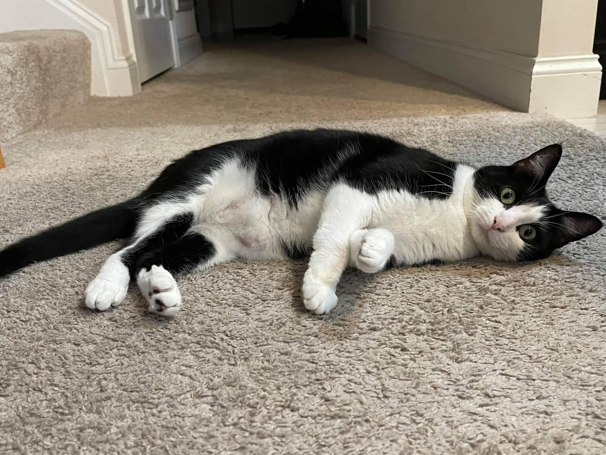
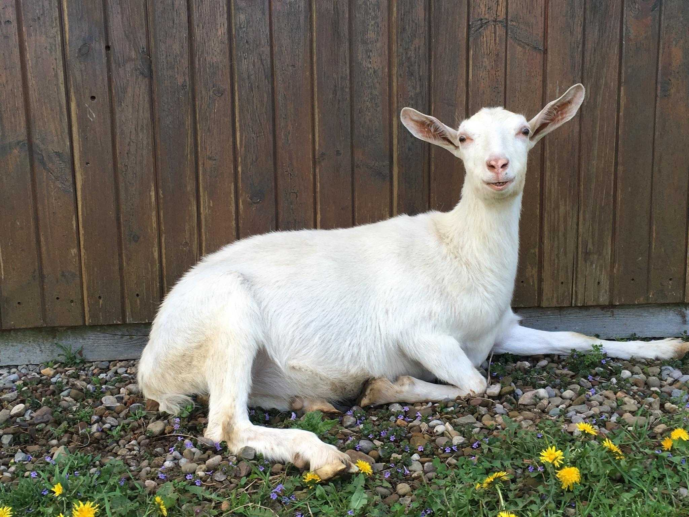
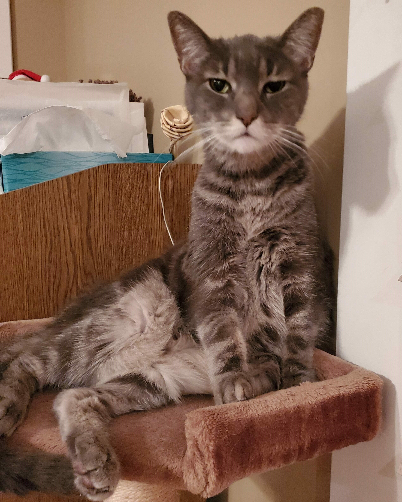

An Introductory Note
Welcome to my webpage, Armchairs are always in places. Because I do not have research to present and am in denial that a professional persona is something I will need in the near future, this page is dedicated to animals named Phoebe and my pets/furchildren (all of whom are now sadly deceased). The title comes from a running list of quotes that I find humorous.
Phoebe the Cat
Phoebe is a cat. She lives in Hershey, Pennsylvania and is in her third year of medical school. I have never met Phoebe, but I hear that she is very sassy. She enjoys eating human food, sitting at the table, and doing other cat things.
Phoebe the Goat
Phoebe is a goat. She lives on a farm in Ohio with lots of other goats. She has a brother named Oliver and several kids, none of whom are named "Phoebe Jr."
Lil Zacqui
Zachariah, or "Lil Zacqui" for short, was my kitty baby. He came from a dumpster behind a Wendy's, but according to a test that I paid too much money for, he had DNA from 10 different cat breeds and was also 18% "polycat," which I think is not a real thing. He was super chill and also the best cat ever. I have been told, however, that organic beings cannot live forever and he passed away in August.
Ned and Jeff
These were my tarantulas (aka spider-babies), Ned (left) and Jeff (right). I inherited them from my older sister, who may or may not have been intoxicated when she purchased them (on separate occasions). Apparently tarantulas grow very slowly and can live for up to 20 years! (Who knew? Not me, and probably not my sister.) Unfortunately, Ned died shortly after molting, which is apparently not uncommon (see also Hoover the talking seal). I like to say that he just couldn't handle puberty. He is interred in Hamilton College's cemetery, next to Ulysses S. Grant III. Jeff outlived Ned by about a year and a half but sadly perished after he decided to stop eating the tiny cockroaches that I dutifully slaughtered for him. He's in the garden.